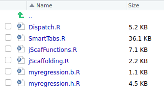
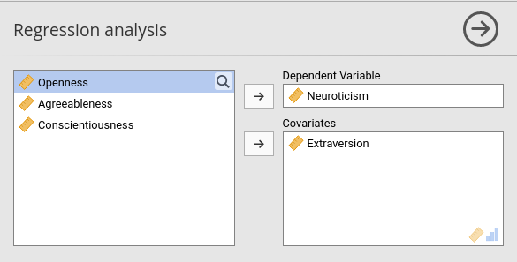
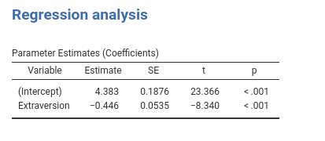

Chapter 3 Results
3.1 Preparing the results
Results in jamovi are organized in tables (and some other widget types). Tables are
R6 classes
with many different properties and options, allowing the programmer to fine-tune the look and feel of the results in details. If you need actions not performed by SmartTable class, you can always twickle the jamovi tables as described in jamovi hub.
jmvScaffold provides a R6 class, named SmartTables, which works as an interface between the programmer and the jamovi results API. With that, you can do a lot of things without touching the jamovi results class. Before that, however, we need to declare our tables in the .r.yaml file. In our little project, we need at least one table for the regression results.
It is a good idea, I suggest, to see how the R table would look like. In R, we obtain the results of a linear regression with lm() command from stats:: package, so we basically need to run this
# data will arrive from jamovi, here we fake one dataset
data <- data.frame(y=rnorm(50),x=rnorm(50))
model <- stats::lm(y~x,data=data)
.summary <- summary(model)
coeffs <- .summary$coefficients
coeffs## Estimate Std. Error t value Pr(>|t|)
## (Intercept) -0.32222282 0.1330457 -2.4218963 0.01926648
## x -0.02113883 0.1149572 -0.1838843 0.85487884Because we do not want spaces in the table heads, we can rename the table names and transform the table into a data.frame.
# data will arrive from jamovi, here we fake one dataset
coeffs <- as.data.frame(coeffs)
names(coeffs)<-c("coef","se","t","p")
coeffs## coef se t p
## (Intercept) -0.32222282 0.1330457 -2.4218963 0.01926648
## x -0.02113883 0.1149572 -0.1838843 0.85487884now that we know how our table will look like we should get into the R programming.
As a side note, I would suggest to always use R commands prefixed with their package name, such as stats::lm rather than lm. This is required if you want to publish your R module in CRAN, and it makes your code much more readable. It is like calling functions with their name and surname, and we want to be polite with our functions.
3.2 Defining the result tables (.r.yaml)
All results tables (and other widgets) are defined in the .r.yaml. Here we need a table that will represent the R table we have seen before. So we need the following code.
---
name: myRegression
title: Regression analysis
jrs: '1.1'
items:
- name: coefficients
title: Parameter Estimates (Coefficients)
type: Table
columns:
- name: var
title: "Variable"
type: text
- name: coef
title: "Estimate"
type: number
- name: se
title: SE
type: number
- name: t
title: "t"
type: number
format: zto
- name: p
title: "p"
type: number
format: zto,pvalue
---So, a widget of type Table, with columns defined by a name, a title and a format. Details of all widgets definitions can be found in the jamovi hub
Compiling the module (2.3) after defining the table in the .r.yaml file produces the table in the output (still empty)

3.3 R code for jamovi
When we compiled our module, jamovi compiler produced two R files and put them in the ./R folder.

The .h.R file can be ignored, the jamovi compiler produces it every time we install the module. The important file is the .b.R file, where all the action takes place. The .b.R file contains a R6 class named [analysisname]Class, in our case myRegressionClass. The class contains (at least) two private functions, the .init() function and the .run() function. Those are the functions that we need to customize.
Before we dive into it, let’s spend two words about how jamovi process works.
When the user opens the analysis, or whenever the GUI is updated, jamovi runs your R module in the .b.R file. It calls the .init() function first and then the .run() function. Actually, the .init() function can be absent, but my suggestion is to define it for all analyses, because in the .init() function the tables are formated and prepared to be filled. The .init() function gives you the opportunity to give your output a nice and professional look. Tables are populated in the .run() function.
A working .b.R file, that does not do anything, is the following:
myRegressionClass <- if (requireNamespace('jmvcore', quietly=TRUE)) R6::R6Class(
"myRegressionClass",
inherit = myRegressionBase,
private = list(
.init = function() {
# `self$data` contains the data
# `self$options` contains the options
# `self$results` contains the results object (to populate)
},
.run = function() {
# `self$data` contains the data
# `self$options` contains the options
# `self$results` contains the results object (to populate)
}
)
)Here is where jmvScaffold comes handy. First, we want to be sure to have installed the jmvScaffold classes. To do that, in R we simply run this code (recall we did it in 1.3 installing the jmvScaffold R package)
jmvScaffold::copy_files()which copies in the present module ./R folder the necessary files.

3.4 Initialize a table
Table objects are passed to the R package with the property self$results. This property is a named list, so we can refer to our table as self$results$coefficients. In the .init() function, we should create a SmartTable object initialized with the table it is going to handle. We simply write this code.
myRegressionClass <- if (requireNamespace('jmvcore', quietly=TRUE)) R6::R6Class(
"myRegressionClass",
inherit = myRegressionBase,
private = list(
.regtab=NULL,
.init = function() {
private$.regtab<-SmartTable$new(self$results$coefficients)
private$.regtab$initTable()
},
.run = function() {
# `self$data` contains the data
# `self$options` contains the options
# `self$results` contains the results object (to populate)
}
)
)which defines a valilla SmartTable, it initializes it and saves it in a private variable .regtab for later use. At the moment, the initialization does not do anything, but creating the SmartTable object. The jamovi table associated with it has all the properties defined in the r.yaml file, but nothing more.
3.5 Populating a table
We can now populate the coefficients jamovi table by interacting with the SmartTable object in the .run() function.
First, we need to gather the user choices made in jamovi GUI by collecting the options we defined in the .a.yalm file. All options are available in R as a named list named self$options. So we can get them to define our regression models.
We should get the option dep to know which is our dependent variable, then we call the option covs. In the .run() function, we can write.
#...#
.run = function() {
dep <- self$options$dep
covs <- self$options$covs
}
#...#dep is a string containing the variable name, whereas covs is a list, so we need to manipulated it to make it a formula to pass it to lm(). This can be done easely with jmvcore R package, which provides very useful functions to handle the GUI input in R (see jmvcore Package for details). Here we use the function jmvcore::composeFormula(dep,covs), which transforms a list of terms into a R formula.
#...#
.run = function() {
dep <- self$options$dep
covs <- self$options$covs
if (!is.something(dep) | !is.something(covs))
return()
formula <- jmvcore::composeFormula(dep,covs)
}
#...#Notice the function is.something(). It is provided by jmvScaffold and it is useful to evaluate options, because options can be of very different classes, and we just want to know if they are set or not. is.something does that.
A this point, we should compute the regression and build a R table to pass to our SmartTable object defined before.
myRegressionClass <- if (requireNamespace('jmvcore', quietly=TRUE)) R6::R6Class(
"myRegressionClass",
inherit = myRegressionBase,
private = list(
.regtab=NULL,
.init = function() {
private$.regtab<-SmartTable$new(self$results$coefficients)
private$.regtab$initTable()
},
.run = function() {
data <- self$data
dep <- self$options$dep
covs <- self$options$covs
if (!is.something(dep) | !is.something(covs))
return()
formula <- jmvcore::composeFormula(dep,covs)
model <- stats::lm(formula,data=data)
.summary <- summary(model)
coeffs <- .summary$coefficients
coeffs <- as.data.frame(coeffs)
names(coeffs) <- c("coef","se","t","p")
private$.regtab$runSource <- coeffs
private$.regtab$runTable()
}
)
)(I use .foo notation for R variables that are named as primitives in R, but I guess this is not a good practice)
What matters here is that we have passed our result table coeffs to the SmartTable with the command private$.regtab$runSource <- coeffs and we have told the table to update with the command private$.regtab$runTable(). We can now install the module in jamovi and check if it works. The rule is simple: every column in the jamovi table is populated with the data in the column with the same name in the R table.


It does work! However, the Variable column is empty. We want to fill it with the names of the covariates. So we simply add the code necessary to add a column to our R data.frame.
#...#
.run = function() {
data <- self$data
dep <- self$options$dep
covs <- self$options$covs
if (!is.something(dep) | !is.something(covs))
return()
formula <- jmvcore::composeFormula(dep,covs)
model <- stats::lm(formula,data=data)
.summary <- summary(model)
coeffs <- .summary$coefficients
coeffs <- as.data.frame(coeffs)
names(coeffs) <- c("coef","se","t","p")
coeffs$var <- rownames(coeffs)
private$.regtab$runSource <- coeffs
private$.regtab$runTable()
}
#...#We have now a decent table with the results.

It goes without saying that one can add any number of covariates, and the table will update automatically.

3.6 Passing data to SmartTables
The SmartTable object accepts data to populate the jamovi table in several different formats, so one can use different strategies depending on their need.
- passing a data.frame to
$runSource - passing a function that returns a data.frame to
$runSource - passing a list of named lists, where each list represents a row and the names are the name of the columns
- passing a function that returns a list of named lists
- initializing the
SmartTablewith an R6 object (see later on for a detailed explanation)
We can try these strategies (but the last) with some simple code, passing some numbers to our coefficients table.
#...#
.run = function() {
## passing a function
fun<-function() {
var=c("a","b","c")
coef=1:3
se=4:6
t=7:9
p=10:12
return(data.frame(var,coef,se,t,p))
}
private$.regtab$runSource <- fun
private$.regtab$runTable()
}
#...#
#...#
.run = function() {
## passing a list of named list
alist<-list(
list(var="x",coef=1,se=4,t=7,p=10),
list(var="y",coef=2,se=5,t=8,p=11),
list(var="z",coef=3,se=6,t=9,p=12)
)
private$.regtab$runSource <- alist
private$.regtab$runTable()
}
#...#
The possibility to pass results to a SmartTable in different ways gives the programmer flexibility to populate tables from different sources. Nonetheless, when the module gets very complex, even this flexibility cannot be enough. When things get complex, the following method may be the best: Associating the table to a R6 class that it is automatically called by the tables themselves. Sound complex but it is not.
3.7 Automatic filling of tables.
You can go a long way off without the following section. One can add tables and define a function or a procedure to fill each table, passing the results data to the $runTable function. However, when your module gets more complex, you want to give a structure to the calls that fill the tables, so you can forget about filling the table and focus on the R programming. Here comes the last method jmvScaffold offers to populate the jamovi tables.
When a SmartTable is initialized, it can be associated with an R6 class that provides the functions to run the table. When the table is run with the $runTable() function, it calls the R6 and inquires if the class has a function called run_[tablename]. If it is there, run_[tablename]() is executed and the table is filled with the return of the function.
Let’s build this R6 new class, and call it Runner.
Runner <- R6::R6Class(
"Runner",
class=TRUE,
cloneable=FALSE,
inherit = Scaffold,
public=list(
analysis=NULL,
initialize=function(obj) {
self$analysis<-obj
},
run_coefficients=function() { # this will be automatically called by SmartTable associated with the `coefficients` table
formula <- jmvcore::composeFormula(self$analysis$options$dep,self$analysis$options$covs)
model <- stats::lm(formula,data=self$analysis$data)
.summary <- summary(model)
coeffs <- .summary$coefficients
coeffs <- as.data.frame(coeffs)
names(coeffs) <- c("coef","se","t","p")
coeffs$var <- rownames(coeffs)
coeffs
}
) # end of public
) # end of classWhat we are doing is to define a R6 object of class Scaffold (very useful in the future), that is initialized with jmvcore::Analysis R6 analysis object, in our case it will be the myRegressionClass object, that contains all information we need to do the analyses. We need to save it somewhere, so we store it in the self$analysis field. Alternatively, you can put it in the private fields (good practice), we did not do it to keep the code simpler. If you are worry about passing a big R6 class (the jamovi myRegressionClass) to another R6 class (Runner), don’t you worry: they are linked by reference, the memory footprint will not increase much (I guess).
Now we need to tell the SmartTable that it is is associated with this class. In the myRegression.b.R file we write:
myRegressionClass <- if (requireNamespace('jmvcore', quietly=TRUE)) R6::R6Class(
"myRegressionClass",
inherit = myRegressionBase,
private = list(
.runner=NULL,
.regtab=NULL,
.init = function() {
private$.runner<-Runner$new(self)
private$.regtab<-SmartTable$new(self$results$coefficients,private$.runner)
private$.regtab$initTable()
},
.run = function() {
data <- self$data
dep <- self$options$dep
covs <- self$options$covs
if (!is.something(dep) | !is.something(covs))
return()
private$.regtab$runTable()
}
)
)You can see that we simply initialize the SmartTable with a Runner R6 class, and in the .run() function of the .b.R file we execute the $runTable() function, which calls run_coefficients function in the runner. If it does not get anything, it would not populate the jamovi table. If the run_coefficients function returns some data, it fills the table with them.
Install the module (2.3) and you get the expected results.
Pretty cool, I dare say. Instead, you might think that this strategy looks a bit complicated and not useful. If so, read on.
3.8 R6 classes to run complex modules
Consider now this case (but many more cases are coming). You have 2 tables to fill: regression coefficients, and a ANOVA table (think about keep adding tons of tables, the story would not change). You want to estimate the model only once, and then use the estimation object (an lm class in this case) for several different tables. We now do it for two tables.
In the .r.yaml file, we add:
#...#
- name: anova
title: ANOVA table
type: Table
columns:
- name: var
title: "Variable"
type: text
- name: test
title: "F-test"
type: number
format: zto
- name: df1
title: "df"
type: integer
- name: df2
title: "dfres"
type: intege
- name: p
title: "p"
type: number
format: zto,pvaluein the Runner.R R code file we add a function to estimate the model , and we define one function for each table to populate.
First, the estimating function.
#...#
### we are in the public field of the Runner class
public=list(
analysis=NULL,
model=NULL,
initialize=function(obj) {
self$analysis<-obj
},
estimate=function() {
formula <- jmvcore::composeFormula(self$analysis$options$dep,self$analysis$options$covs)
self$model <- stats::lm(formula,data=self$analysis$data)
},
#...#(again, for simplicity I put the model in a public field self$model, but putting it in private$.model is more elegant).
As regards filling the tables, we can do this:
### we are in the public field of the Runner class
#...#
run_coefficients=function() {
.summary <- summary(self$model)
coeffs <- .summary$coefficients
coeffs <- as.data.frame(coeffs)
names(coeffs) <- c("coef","se","t","p")
coeffs$var <- rownames(coeffs)
return(coeffs)
},
run_anova=function() {
.anova <- as.data.frame(car::Anova(self$model,type=3))
names(.anova) <- c("nothing","df1","test","p")
.anova$df2 <- self$model$df.residual
.anova$var <- rownames(.anova)
return(.anova)
}
#...#Now we should program in the myRegression.b.R the new table anova.
myRegressionClass <- if (requireNamespace('jmvcore', quietly=TRUE)) R6::R6Class(
"myRegressionClass",
inherit = myRegressionBase,
private = list(
.runner=NULL,
# this is a list that contains all the SmartTables
.tables=list(),
.init = function() {
if (!is.something(self$options$dep) | !is.something(self$options$covs))
return()
# define the runner
private$.runner<-Runner$new(self)
# set up the coefficients SmartTable
atable<-SmartTable$new(self$results$coefficients,private$.runner)
# put the SmartTable in the list
private$.tables[[length(private$.tables)+1]]<-atable
# set up the anova SmartTable
atable<-SmartTable$new(self$results$anova,private$.runner)
# put the SmartTable in the list
private$.tables[[length(private$.tables)+1]]<-atable
# init all tables
lapply(private$.tables,function(x) x$initTable())
},
.run = function() {
if (!is.something(self$options$dep) | !is.something(self$options$covs))
return()
# estimate the model
private$.runner$estimate()
# execute all SmartTable run functions
lapply(private$.tables,function(x) x$runTable())
}
)
)From now on, we can simply add results tables by defining each table in the .r.yaml file, define a function named run_[tablename] in the Runner.R file, and add the SmartTable to the private$.tables list. Pay attention to the fact that in the .init() function we define our smart object and then add them to a list. At the end, we run the $initTable() function for all objects in the list. The same we do in the .run() function executing the $runTable() function of each object. Later on, when we add additional tables, the last command (the lappy(..) command) should always appear after any definition of the tables.
Let’s do that with a new table, named effectSizes that would output some effect size indices (which will customize later on). First, the .r.yaml.
#...#
- name: effects
title: Effect Size Indices
type: Table
columns:
- name: var
title: "Variable"
type: text
- name: index
title: "Index"
type: text
- name: value
title: "Value"
type: number
format: zto
#...#This means we set up a jamovi table named effects with three columns, var, index and value. To fill it, we add in the Runner class a run_effects() function. There, we use the functions in R package effectsize to compute the indices, so we need to add it in our DESCRIPTION file as an Imports (not shown here).
#...#
run_effects=function() {
eps <- effectsize::epsilon_squared(self$model)
eps_df <- data.frame(var=eps$Parameter,index="pEpsilon^2",value=eps$Epsilon2)
eta <- effectsize::eta_squared(self$model)
eta_df <- data.frame(var=eta$Parameter,index="pEta^2",value=eta$Eta2)
omega <- effectsize::omega_squared(self$model)
omega_df <- data.frame(var=eta$Parameter,index="pOmega^2",value=omega$Omega2)
tab <- rbind(eps_df,eta_df,omega_df)
return(tab)
}
#...#Now, we define the table as a SmartTable in the .b.R file and add it to the list of SmartTable objects we defined before.
## in the `.init()` function
# set up the effects SmartTable
atable<-SmartTable$new(self$results$effects,private$.runner)
# put the SmartTable in the list
private$.tables[[length(private$.tables)+1]]<-atableAfter installing the module, we should get the results as follows:

Aesthetically, the table can be improved, but the general idea of setting and populating tables should be now clear.